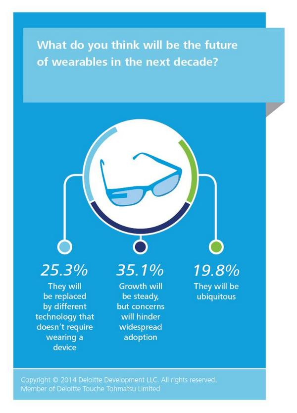

Wearable gadgets have a long way to go
What Can We Do Now?
- 
We tried quite a few wearable gadgets
Despite the hoopla, they are unlikely to turn into medically useful products in the near future. Technological constraints and high prices are among the reasons why. Yet, investigating gadgets at YC Hacks made us think not only about the many great applications of the future, but also the small steps we could take today. Here they are.
Myo
When an emergency strikes, you know you need medical care fast. With our app you could not only send a message but also attach your picture - as a picture is worth a thousand words. And our app makes it easier than a snap. Piece and smiles. Kawaii Piisu is available for download! Check it out.
Beacons
For carryibng up-to-date medically-relevant information, "good samaritan" app and to serve as a "black box" in emergency situations
And the rest
Pebble, Drones, Virtual reality glasses... We discussed that too.